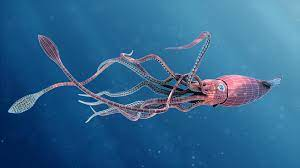

A squid is a mollusc with an elongated soft body, large eyes, eight arms, and two tentacles in the
superorder Decapodiformes. Like all other cephalopods, squid have a distinct head, bilateral symmetry, and a
mantle. They are mainly soft-bodied, like octopuses, but have a small internal skeleton in the form of a
rod-like gladius or pen, made of chitin.
Squid diverged from other cephalopods during the Jurassic and occupy a similar role to teleost fish as open
water predators of similar size and behaviour. They play an important role in the open water food web. The
two long tentacles are used to grab prey and the eight arms to hold and control it. The beak then cuts the
food into suitable size chunks for swallowing. Squid are rapid swimmers, moving by jet propulsion, and
largely locate their prey by sight. They are among the most intelligent of invertebrates, with groups of
Humboldt squid having been observed hunting cooperatively. They are preyed on by sharks, other fish, sea
birds, seals and cetaceans, particularly sperm whales.
Squid can change colour for camouflage and signalling. Some species are bioluminescent, using their light
for counter-illumination camouflage, while many species can eject a cloud of ink to distract predators.
Squid are used for human consumption with commercial fisheries in Japan, the Mediterranean, the southwestern
Atlantic, the eastern Pacific and elsewhere. They are used in cuisines around the world, often known as
"calamari". Squid have featured in literature since classical times, especially in tales of giant squid and
sea monsters.